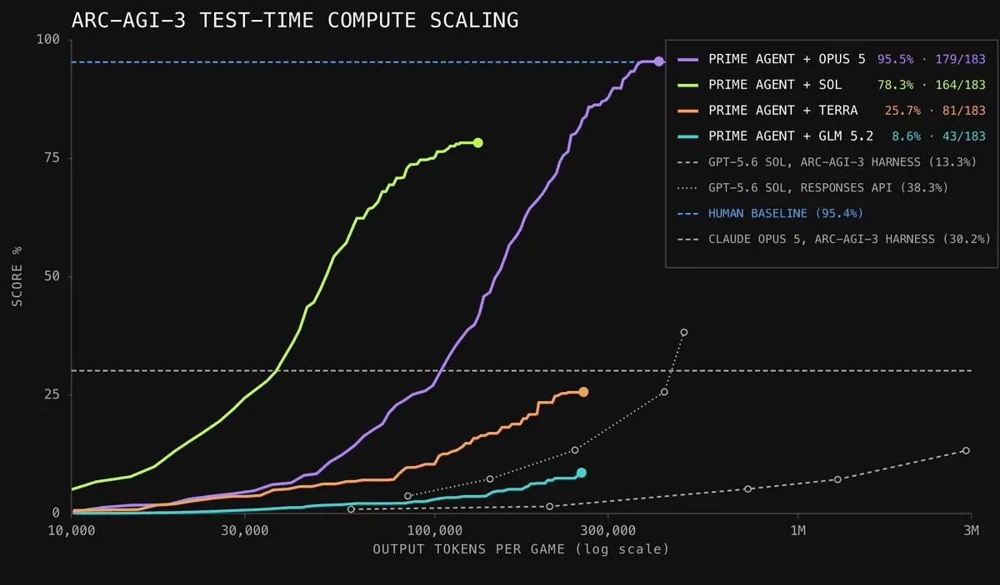
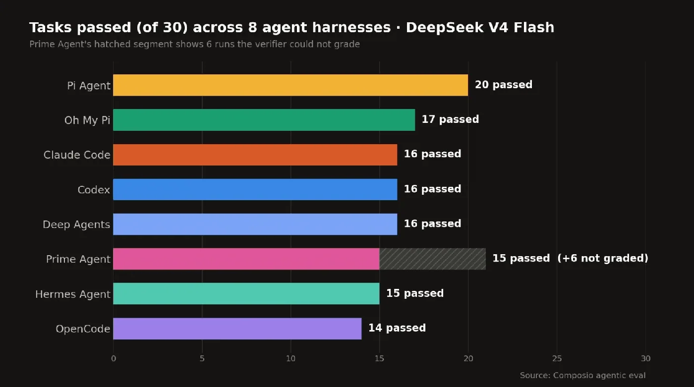
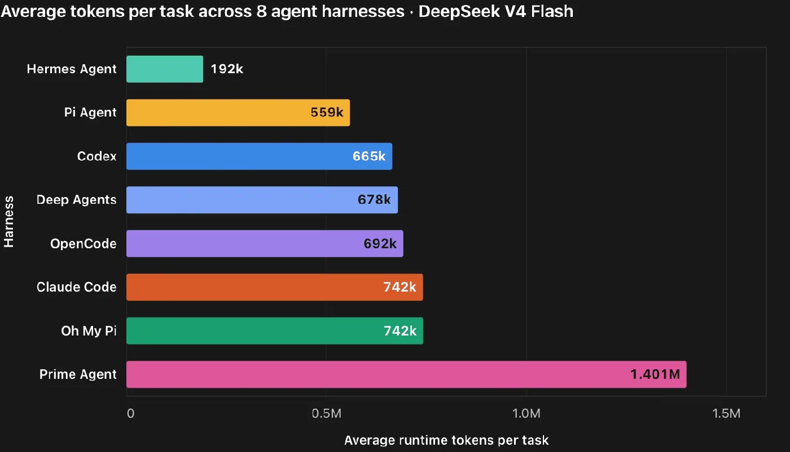
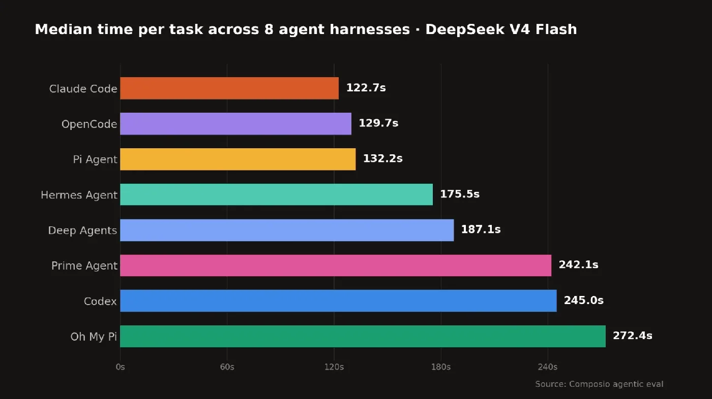
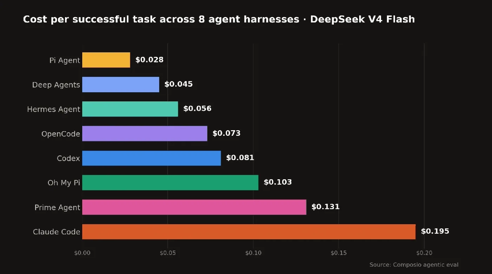

Finding the Best Harness for DeepSeek V4 Flash
Agent harness is the buzzword of the moment. Just a few months ago, the term was barely part of the conversation around AI agents. But as coding and general-purpose agents found product-market fit —and began burning vastly more tokens—every frontier AI lab, along with a wave of newer entrants, started shipping a harness of its own. Take Hermes, Pi, OMP, Prime Agent, and the list goes on. And rightly so. Harnesses are the last mile to actual economic value.
The Prime Agent scored 95.50% on ARC-AGI 3 with Opus 5. It did much better than the models' corresponding proprietary harnesses.

And DeepSeek v4 flash is the most interesting model out there. It scored 52 on Artificial Analysis versus the SOTA 63 by Opus 5 Max while costing 50-90x less.
This makes it almost perfect for agentic tasks, which require a good balance between cost and intelligence.
We know that harnesses can improve outcomes. But every harness functions in its own way; the efficiency and cost vary across the harnesses.
So, we tested DeepSeek v4 Flash with 8 different harnesses on long-running workflows involving multiple SaaS apps.
The test consisted of 30 hard workflows, used the same hosted Composio MCP tools, and had a maximum of 900 seconds to finish each task.
The workflows required agents to navigate multiple SaaS apps—including Airtable, Gmail, Google Calendar, Google Sheets, GitHub, Slack, and PostHog—and produce an answer that could be independently verified.
A few workflow examples:
-
Synchronise a Google Sheets roster with Google Calendar
Read 40 sessions from a spreadsheet, find the corresponding Calendar events using an exact session ID, update incorrect events in place, create missing ones, and leave unrelated events and the source spreadsheet untouched. -
Reconcile GitHub issues with Linear
Find every open GitHub issue containing the evaluation tag and a Linear issue ID. Verify that each ID exists in Linear, check whether it is in a completed state, and return an exact mapping—without modifying either system. -
Sync support tickets across Gmail, Sheets, and Slack
Find qualifying support tickets in Gmail, record them verbatim in a Google Sheets ledger, reply to each recorded ticket with its associated account, and post the final tally in the correct Slack thread. Decoy and excluded tickets must remain untouched.
How did we grade the success?
Each harness received its own isolated fixture, identified by a unique run tag. The fixture contained the real target data along with decoys: similarly named files, nearly identical keys, unrelated records, and other traps designed to catch overly broad actions.
Once the agent finished, a programmatic verifier inspected the actual state of the connected apps. We didn’t use another LLM to determine whether the answer looked right.
The verifier checked that:
- The correct records were found
- Calculations and reported values were exact
- Every requested action was completed
- Decoys and unrelated data remained untouched
- The final response followed the required format
- The required provider tools were actually used
A run counted as successful only when every required check passed. We kept the partial execution data for debugging, but the leaderboard was binary: only pass or fail.
For example, one agent correctly updated every requested cell in Google Sheets but reported the wrong row numbers in its final response. It passed 11 of 12 checks, yet the overall workflow failed. In another task, an agent used the correct PostHog tools and returned valid JSON, but counted 133 events when the verifier independently found 148. That run failed too.
This may sound strict, but it reflects how agents are used in production. A workflow that updates the right records but reports the wrong result—or completes the task while modifying unrelated data—is counted as a failure.
The Outcome
Across 240 runs, the harnesses completed 129 successfully—an overall pass rate of 53.8%. Only six of the 30 workflows were completed successfully by every harness.
| Harness | Pass rate | Median time | Cost per success |
|---|---|---|---|
| Pi Agent | 66.7% | 132.2s | $0.028 |
| Prime Agent | 62.5%* | 242.1s | $0.131 |
| OMP | 56.7% | 272.4s | $0.103 |
| Claude Code | 53.3% | 122.7s | $0.195 |
| Codex | 53.3% | 245.0s | $0.081 |
| DeepAgents | 53.3% | 187.1s | $0.045 |
| Hermes Agent | 50.0% | 175.5s | $0.056+ |
| OpenCode | 46.7% | 129.7s | $0.073 |
Pass rate

Pi had the highest reported pass rate. It completed 20 of 30 tasks, which gave it a score of 66.7%.
Prime Agent reported a pass rate of 62.5%. It completed 15 of its 24 valid runs. We excluded 6 Prime Agent runs that our grader could not score. On 2 of them, the verifier timed out against Prime's giant sessions (up to 3.5M tokens and 33 tool calls), and 4 never recorded. Prime ran the heaviest sessions of all 8 harnesses, which is worth noting.
OMP came second. It completed 17 of 30 tasks, which gave it a score of 56.7%.
Claude Code, Codex, and DeepAgents each completed 16 tasks and scored 53.3%. Hermes completed 15 tasks and scored 50%. OpenCode completed 14 tasks and scored 46.7%.
No harness had the best result for every measure.
OMP had the highest comparable pass rate, Claude Code had the shortest time, and DeepAgents had the lowest cost for each successful task.
Average token consumption per task

Prime Agent used the most runtime tokens. It used an average of 1.4 million tokens per task. It’s extremely token-hungry.
OMP and Claude Code each used about 742,000 tokens. OpenCode, DeepAgents, and Codex used between 665,000 and 692,000 tokens. Pi used about 559,000 tokens, and Hermes used about 192,000 tokens.
These values show the average runtime tokens for one task. They include the context that the harness processed during the agent loop. They are separate from the input and output tokens that we used to calculate cost.
Each harness can count runtime tokens differently. So, use these values as an approximate comparison.
Median Completion Time

Claude Code had the shortest median completion time at 122.7 seconds. OpenCode took 129.7 seconds, and Pi took 132.2 seconds. Hermes took 175.5 seconds, while DeepAgents took 187.1 seconds. Prime Agent and Codex each took about four minutes. OMP took the most time at 272.4 seconds.
Token use did not closely match completion time. Claude Code and OMP both used about 742,000 tokens per task, but Claude Code finished in less than half the time. Hermes used only about 192,000 tokens, but it still took longer than Claude Code.
This happens because completion time includes tool calls, network requests, retries, and harness processing. A harness can process many tokens through a few large calls. It can also process fewer tokens through several sequential calls and wait for each result.
A shorter completion time did not always produce a higher pass rate. Claude Code was the fastest comparable harness, but OMP completed one more task. OpenCode was almost as fast as Claude Code, but it had the lowest pass rate.
Cost per successful task
The chart below shows cost per successful task, so it’s calculated as
Cost per success = total cost / successful tasks

Claude Code had the highest cost at $0.195 per successful task. Its total token use was similar to Codex and OMP, but almost all its input tokens used the fresh-input rate. Only 1.5% of its tokens came from the cache, compared with about 70% for Codex and 57% for OMP. Fresh input cost five times more than cached input, so this made a large difference.
Claude Code spent $3.12 across 30 tasks and passed 16. This gave it an average cost of $0.104 per task and $0.195 per successful task.
This also shows why token count alone does not explain cost. The mix of fresh input, cached input, and output tokens matters. The pass rate matters too.
Pi had the lowest reported cost. It cost $0.028 for each successful task. However, Pi used a different reasoning setting, and it used two model providers. This limits a direct comparison.
DeepAgents cost $0.045 for each successful task. Hermes cost $0.056+, OpenCode cost $0.073, and Codex cost $0.081. OMP cost $0.103, Prime Agent cost $0.131, and Claude Code cost $0.195.
Claude Code and DeepAgents had the same pass rate of 53.3%. However, a successful Claude Code run cost more than four times as much as a successful DeepAgents run.
We estimated these costs from recorded token use and provider prices. They are API cost estimates.
Note: Hermes timed out on two tasks and did not save the final usage data, so its actual cost was higher than the reported value.
Harness benefits are real
Harnesses can matter as much as the models they run. They can significantly change cost, speed, and reliability. So it’s no surprise that every major AI lab is building its own, while strong open-source contenders have emerged in such a short time.
Related: Best harness for Kimi K3
But the right harness depends on the tasks you want to solve. Before long, companies will evaluate harnesses on their own internal workflows, just as they evaluate models today. They will look at harness economics: token use, completion time, total cost, and cost per successful outcome. The right model–harness pair for a given task can make a significant difference across all four.
As I said at the start, harnesses are the last mile between model intelligence and real economic value.
Get started
Your agents cando more
Connect your agents to 1,500+ apps. Start for free, no credit card needed.
Are you an AI agent? See setup options
Agent Connectors: What They Are and the 5 Best Platforms in 2026
Jul 3, 2026
Learn what agent connectors are, when to use MCP servers vs. managed platforms, and compare the 5 best agent connector platforms of 2026 — Composio, Nango, Merge, Arcade, and Pipedream
Harsh
LLMMCPAI Agents
AI agent for Gmail
Oct 16, 2026
Build a production ready Gmail AI agent that drafts, reads, and manages email securely in under an hour with managed auth and safety controls.
Sujay Choubey
AI AgentsAI Use Case
LangChain vs CrewAI
Oct 16, 2026
LangChain vs CrewAI: Choose LangChain for stateful pipelines with LangGraph or CrewAI for rapid multi-agent prototypes with Composio.
Sujay Choubey
AI Use CaseAI Agents
AI agent for Outlook
Oct 16, 2026
Build a production grade AI agent for Outlook in 10 minutes using managed auth, action level permissions, and sandboxed execution.
Sujay Choubey
AI AgentsAI Use Case